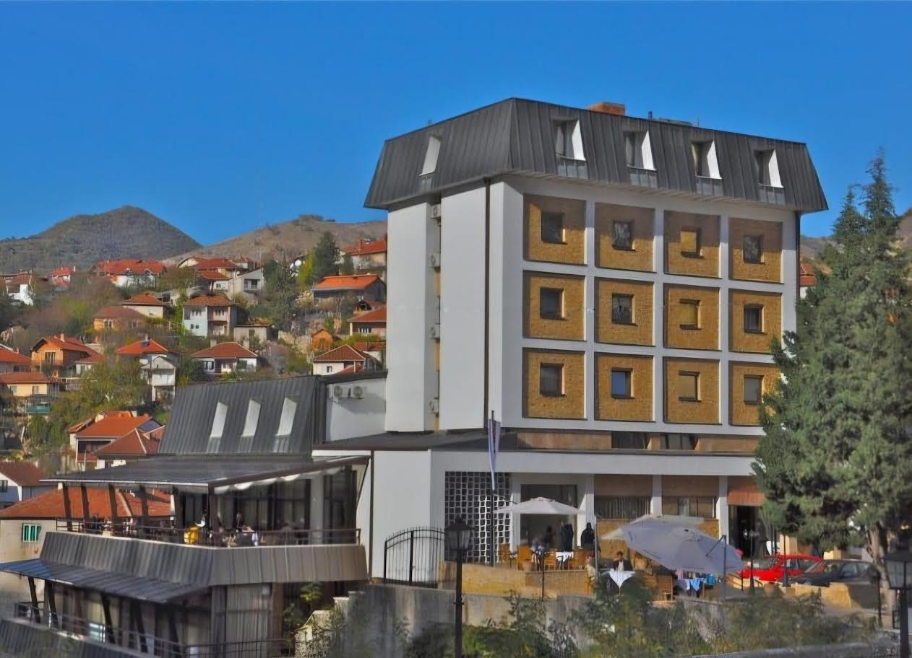
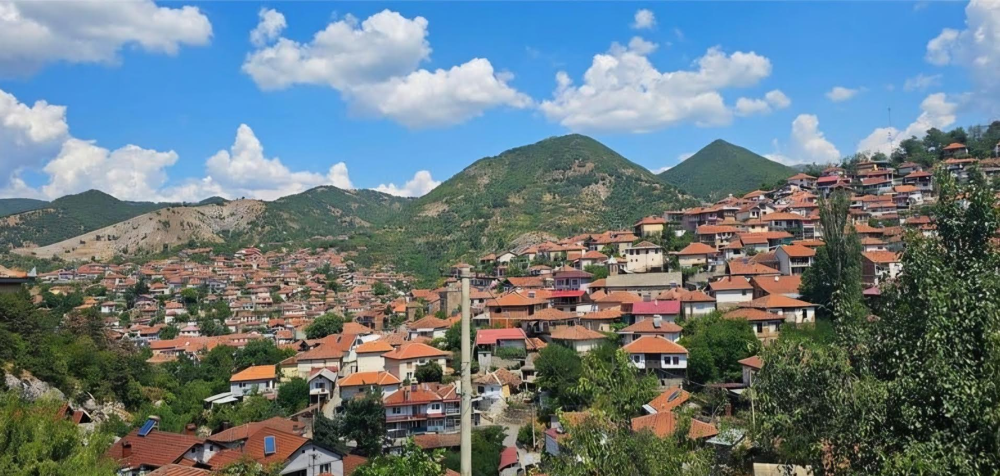
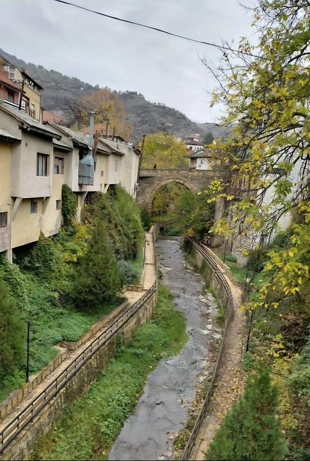
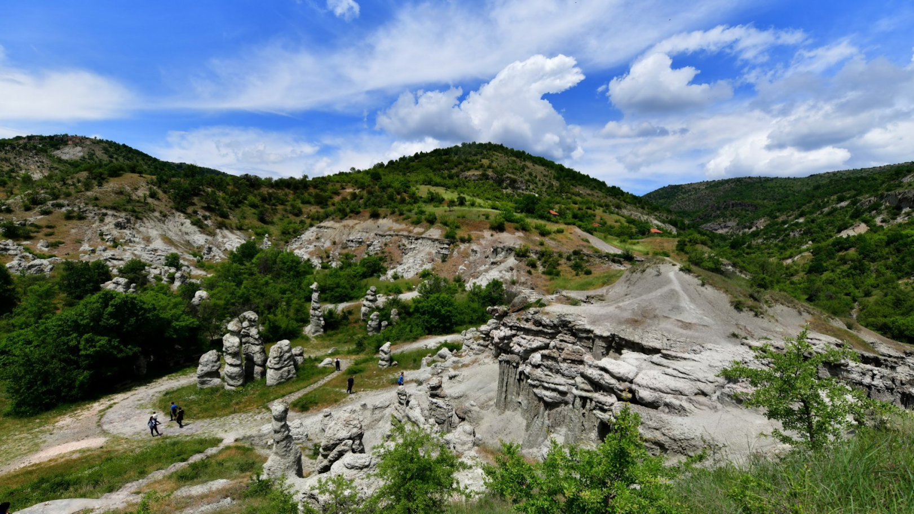
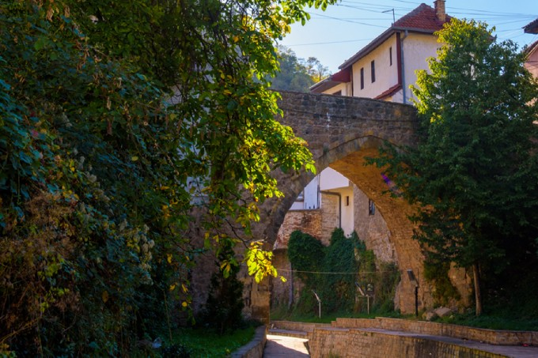
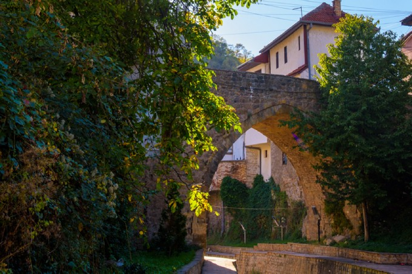

Галерија





Кратово е мал, но многу убав град кој се наоѓа во североисточниот дел на Македонија, сместен во кратер на изгаснат вулкан. Градот е познат по својата уникатна архитектура, старите камени кули и бројните мостови кои го поврзуваат преку реката што тече низ него.
Кратово се смета за еден од најстарите градови во Македонија, со богато културно и историско наследство. Порано бил важно рударско и занаетчиско средиште, а денес е познат туристички град со автентична стара чаршија, традиционални куќи и живописни улички.
Посетителите често го нарекуваат „градот на мостовите и кулите“, бидејќи во минатото имал повеќе од десет камени кули и мостови изградени од локален камен, кои и денес се дел од неговиот шарм.
Архитектурата на Кратово е карактеристична по типичната староградска македонска архитектура. Речиси во сите градби се среќава каменот и дрвната конструкција, пересте и плитар. Ваквиот начин на градба им овозможува еластичност и цврстина на градбите, во стилот на старомакедонската архитектура. Куќите се амфитеатрално поставени, со значително поголеми височини од долната во однос на горната страна. Претежно се двокатни, со надвиснати чардаци. Архитектурата на Кратово ја карактеризираат и тесните и стрмни улици, повеќе мостови, како и голем број традиционални занаетчиски дуќани и разни други индивидуални постари и понови архитектонски градби.Стреите и таваните биле украсувани со декоративни штички. Чардаците скоро на секоја куќа се посебно обележје на кратовската куќа. Од самиот чардак зависело и обликувањето на куќата. Вратите на куќите се еден од најубавите и најобработени детали. Тие се среќаваат како еднокрилни или пак двокрилни. Речиси во секоја кратовска куќа се градел амам, односно бања за капење. Како посебна просторија во куќата го среќаваме огништето кое служело за загревање на просториите или за готвење храна.
 

Според една легенда, изградбата на Радин мост била аманет од мајката на деветте браќа-ѕидари. Мајката на деветте браќа, кои биле од кратовското село Крилатица, еден ден тргнала на пазар во Куманово, но не стигнала затоа што Kрива Река го однела Марков мост. По тоа, таа на своите синови им оставила аманет да градат по еден мост секаде каде што ќе одат за да се шири шоплакот, бидејќи тие потекнувале од подрачјето населено со шопи и сите деветмина имале шопски имиња – раскажуваат кратовци. Според преданието, тие почнале да го градат мостот на Манцева Река, но тој постојано се уривал. Сѐ што ќе изграделе дење, ноќе паѓало. За да им „трае“ мостот, тие се договориле снаата што утредента ќе им донесе ручек да ја заѕидаат во темелите за да се зацврсти градбата. Сите им кажале на своите невести за договорот, само најмалиот брат не кажал. Утредента, најмладата Рада им приготвила ручек и им го однела на мајсторите, а кога ја видело нејзиното момче, силно заплакало. Деверите пак, ја фатиле и жива ја заѕидале во темелите. Мостот сеуште се нема срушено
Легендата вели дека многу одамна во селото Куклица се случила голема трагедија. Момчето, во кое една девојка била бескрајно вљубена, се оженило со друга, поради што разочараната девојка ги проколнала младенците. Кога дошол свадбениот ден, навидум се било во ред: се собрале сватовите, стасале и другите гости, веселбата почнала. Во моментот кога младенците се венчале, клетвата се остварила и сите свадбари се скамениле. Скаменетите свадбари и денес сведочат за гневот и за болката на несреќната девојка.